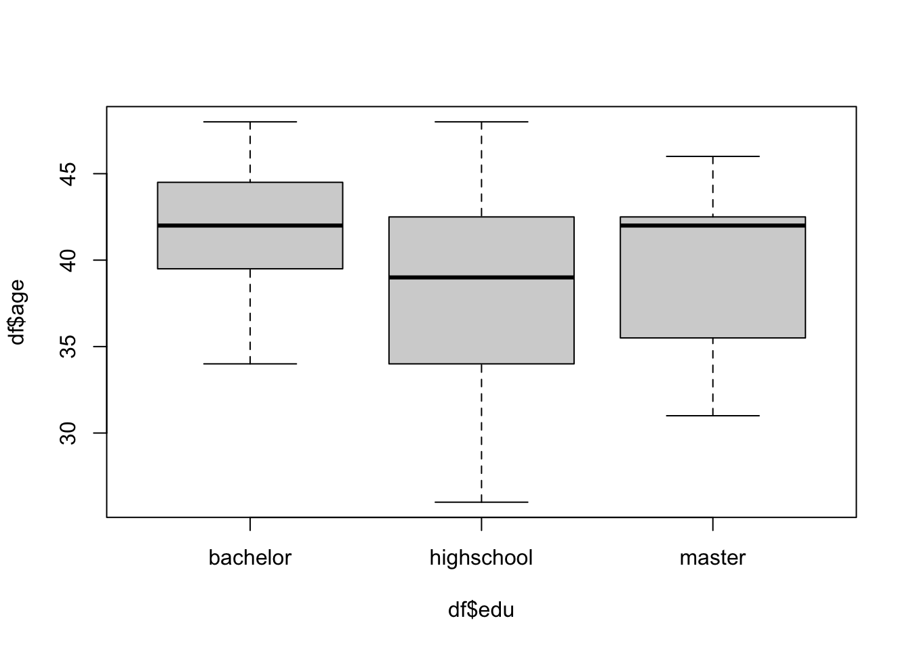
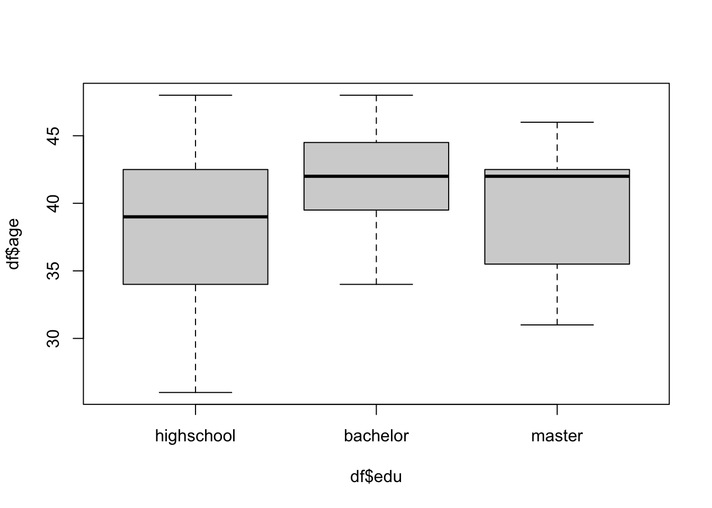
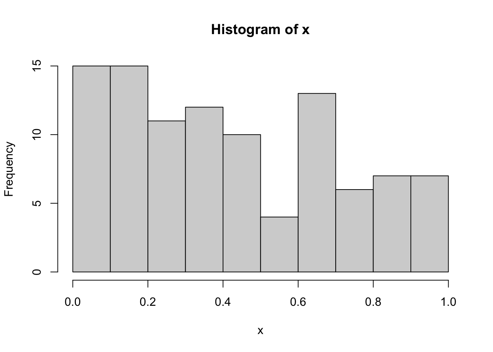

# numeric 数值型，str()查看对象的类型
a1 <- c(1,2,3,4,5)
str(a1) num [1:5] 1 2 3 4 5str(pi) num 3.14str(sqrt(2)) num 1.41# data.frame()创建数据框
df <- data.frame(
id = 1:50,
age = round(rnorm(50,40,5)),
edu = c(rep("highschool",20),
rep("bachelor", 15),
rep("master",15)),
sex = ifelse(rbinom(50, 1, 0.6) == 1,
"male", "female")
)
head(df) #显示df的前六行 id age edu sex
1 1 44 highschool male
2 2 32 highschool male
3 3 35 highschool female
4 4 44 highschool female
5 5 42 highschool male
6 6 38 highschool female [1] "highschool" "highschool" "highschool" "highschool" "highschool"
[6] "highschool" "highschool" "highschool" "highschool" "highschool"
[11] "highschool" "highschool" "highschool" "highschool" "highschool"
[16] "highschool" "highschool" "highschool" "highschool" "highschool"
[21] "bachelor" "bachelor" "bachelor" "bachelor" "bachelor"
[26] "bachelor" "bachelor" "bachelor" "bachelor" "bachelor"
[31] "bachelor" "bachelor" "bachelor" "bachelor" "bachelor"
[36] "master" "master" "master" "master" "master"
[41] "master" "master" "master" "master" "master"
[46] "master" "master" "master" "master" "master" [1] "bachelor" "highschool" "master" [1] highschool highschool highschool highschool highschool highschool
[7] highschool highschool highschool highschool highschool highschool
[13] highschool highschool highschool highschool highschool highschool
[19] highschool highschool bachelor bachelor bachelor bachelor
[25] bachelor bachelor bachelor bachelor bachelor bachelor
[31] bachelor bachelor bachelor bachelor bachelor master
[37] master master master master master master
[43] master master master master master master
[49] master master
Levels: bachelor highschool master
# ordinal scale, levels = 自定义逻辑顺序
df$edu <- factor(df$edu,
levels = c("highschool", "bachelor", "master"))
levels(df$edu)[1] "highschool" "bachelor" "master" 
[1] 3 8 13 18[1] 1 2 3 4 5 [,1] [,2] [,3]
[1,] 6 11 16
[2,] 7 12 17
[3,] 8 13 18[1] 10# 矩阵中可以存放字符串
cells <- letters[1:10]
# 定义矩阵的行名、列名
rnames <- c("team1", "team2")
cnames <- c("class1", "class2", "class3", "class4", "class5")
mymatrix <- matrix(cells, nrow=2, ncol=5, byrow=TRUE,
dimnames=list(rnames, cnames))
mymatrix["team1", ]class1 class2 class3 class4 class5
"a" "b" "c" "d" "e" team1 team2
"a" "f" #创建数据框data.frame()
d <- c(1,2,3,4)
e <- c("red", "white", "green", NA)
f <- c(TRUE,TRUE,TRUE,FALSE)
df <- data.frame(id = d,
color = e,
pass = f)
df id color pass
1 1 red TRUE
2 2 white TRUE
3 3 green TRUE
4 4 <NA> FALSE id color
1 1 red
2 2 white
3 3 green
4 4 <NA> id pass
1 1 TRUE
2 2 TRUE
3 3 TRUE
4 4 FALSE[1] "red" "white" "green" NA mpg cyl disp hp drat wt qsec vs am gear carb
Mazda RX4 21.0 6 160 110 3.90 2.620 16.46 0 1 4 4
Mazda RX4 Wag 21.0 6 160 110 3.90 2.875 17.02 0 1 4 4
Datsun 710 22.8 4 108 93 3.85 2.320 18.61 1 1 4 1
Hornet 4 Drive 21.4 6 258 110 3.08 3.215 19.44 1 0 3 1
Hornet Sportabout 18.7 8 360 175 3.15 3.440 17.02 0 0 3 2
Valiant 18.1 6 225 105 2.76 3.460 20.22 1 0 3 1 mpg cyl disp hp drat wt qsec vs am gear carb
Porsche 914-2 26.0 4 120.3 91 4.43 2.140 16.7 0 1 5 2
Lotus Europa 30.4 4 95.1 113 3.77 1.513 16.9 1 1 5 2
Ford Pantera L 15.8 8 351.0 264 4.22 3.170 14.5 0 1 5 4
Ferrari Dino 19.7 6 145.0 175 3.62 2.770 15.5 0 1 5 6
Maserati Bora 15.0 8 301.0 335 3.54 3.570 14.6 0 1 5 8
Volvo 142E 21.4 4 121.0 109 4.11 2.780 18.6 1 1 4 2[1] 32 11'data.frame': 32 obs. of 11 variables:
$ mpg : num 21 21 22.8 21.4 18.7 18.1 14.3 24.4 22.8 19.2 ...
$ cyl : num 6 6 4 6 8 6 8 4 4 6 ...
$ disp: num 160 160 108 258 360 ...
$ hp : num 110 110 93 110 175 105 245 62 95 123 ...
$ drat: num 3.9 3.9 3.85 3.08 3.15 2.76 3.21 3.69 3.92 3.92 ...
$ wt : num 2.62 2.88 2.32 3.21 3.44 ...
$ qsec: num 16.5 17 18.6 19.4 17 ...
$ vs : num 0 0 1 1 0 1 0 1 1 1 ...
$ am : num 1 1 1 0 0 0 0 0 0 0 ...
$ gear: num 4 4 4 3 3 3 3 4 4 4 ...
$ carb: num 4 4 1 1 2 1 4 2 2 4 ...# 创建列表list
mylist <- list(myvector = y1,
mymatrix = cells,
mydata = df)
mylist[[1]][2,3] #第1个对象中的第2行第3列[1] 12[1] "red" "white" "green" NA 
$breaks
[1] 0.0 0.1 0.2 0.3 0.4 0.5 0.6 0.7 0.8 0.9 1.0
$counts
[1] 11 12 11 6 9 12 6 9 13 11
$density
[1] 1.1 1.2 1.1 0.6 0.9 1.2 0.6 0.9 1.3 1.1
$mids
[1] 0.05 0.15 0.25 0.35 0.45 0.55 0.65 0.75 0.85 0.95
$xname
[1] "x"
$equidist
[1] TRUE
attr(,"class")
[1] "histogram"